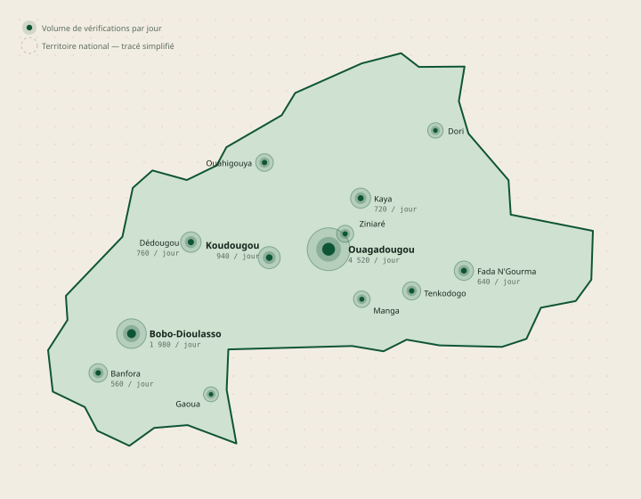

Villes couvertes
0/ 22
59 % des villes cibles9 à ouvrir
Territoire · 13 régions
Où le dispositif est présent, où il manque encore. Les volumes sont fictifs et servent à valider la lecture cartographique.
Burkina Faso · vérifications par jour · bulles proportionnelles

Vérifications / jour
Aucune officine connectée
Volumes, officines, couverture et priorités
| Ville | Région | Vérif. / jour | Officines | Couverture | Priorité | Dernière activité |
|---|---|---|---|---|---|---|
| Ouagadougou | Centre | 4 520 | 108 | Saturée | il y a 3 min | |
| Bobo-Dioulasso | Hauts-Bassins | 1 980 | 62 | Solide | il y a 9 min | |
| Koudougou | Centre-Ouest | 940 | 34 | Solide | il y a 1 h | |
| Dédougou | Boucle du Mouhoun | 760 | 30 | À renforcer | il y a 2 h | |
| Kaya | Centre-Nord | 720 | 26 | À renforcer | il y a 2 h | |
| Fada N'Gourma | Est | 640 | 24 | À renforcer | il y a 3 h | |
| Banfora | Cascades | 560 | 22 | Solide | il y a 4 h | |
| Tenkodogo | Centre-Est | 520 | 20 | À renforcer | il y a 5 h | |
| Ouahigouya | Nord | 480 | 18 | À renforcer | il y a 6 h | |
| Ziniaré | Plateau-Central | 420 | 14 | À renforcer | il y a 7 h | |
| Manga | Centre-Sud | 380 | 12 | À renforcer | il y a 8 h | |
| Dori | Sahel | 300 | 8 | Zone blanche | il y a 2 j | |
| Gaoua | Sud-Ouest | 260 | 6 | Zone blanche | il y a 6 j |
La carte ne représente pas la couverture réseau mobile : elle montre l'usage réel du dispositif. Un volume faible peut signaler une absence d'officine partenaire autant qu'un manque d'adhésion des patients.